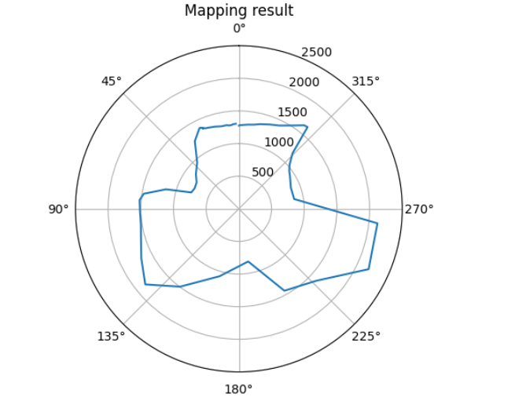
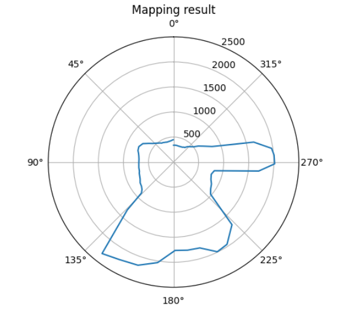
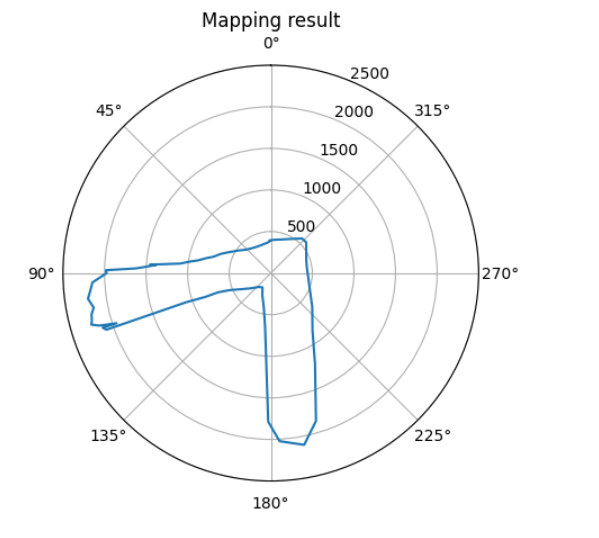
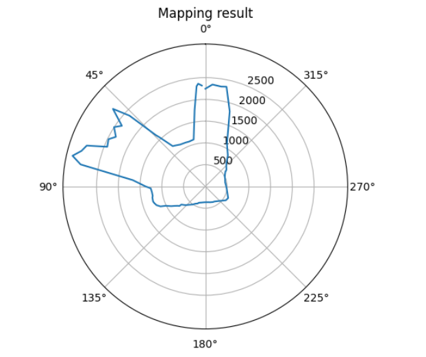
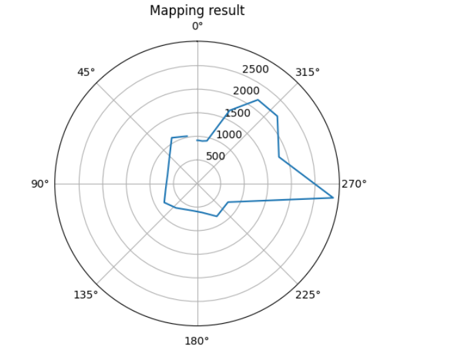
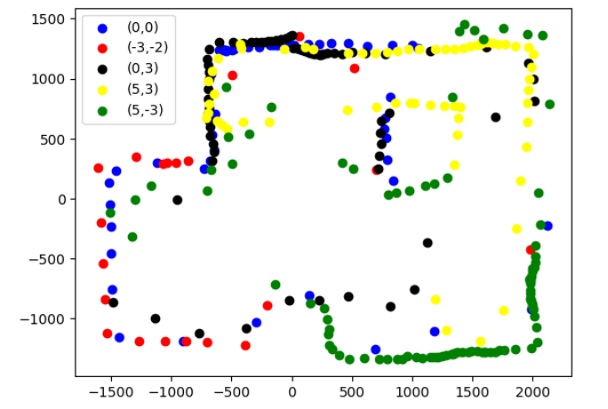
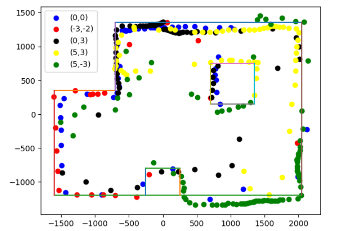

In this lab, we'll make a map of a still room that will be used later for localization and navigation tasks. To create the map, put the robot car in a few marked spots around the lab. Have it spin in place while collecting ToF readings. Combine the data from different locations, use transformation matrices to plot points, and draw the map with straight lines.
In this lab, I used speed control to rotate the robot car at an average of 25 degrees per second. I set up the PID control to maintain the rotation at 25 degrees/second by adjusting the motor speed. The IMU setup was based on a previous lab. Spinning the car slowly was challenging due to friction, battery effects, and imbalances between the left and right motors, which could cause the car not to spin in place. I set the starting speed to 74 and the KP to 0.1. The following code demonstrates the PID control:
And the result of the angular control is shown below:
In the video, my car can be seen moving slowly on its axis, although it appears somewhat unstable. I set angular speed was 25 degrees per second. The measured speed was somewhat inconsistent, the average was around 12 degrees. The motor speed changed slightly, ranging from 74 to 80,suggesting that the car motor was stable. The instability was likely due to varying friction between the tiles and wheels. The total time to spin 360 degrees was about 20 seconds, which means the average angular speed was close to 12 degrees per second.
The Mapping reuslt is shown below:
Result of (0,0):
Result of (0，3):
Result of (5，3):
Result of (5，-3):
Result of (-3，-2):
After transfer the reading from the different position using transformation metrics , the mapping I get is shown below:
After transfer the reading from the different position using transformation metrics , the mapping I get is shown below:
